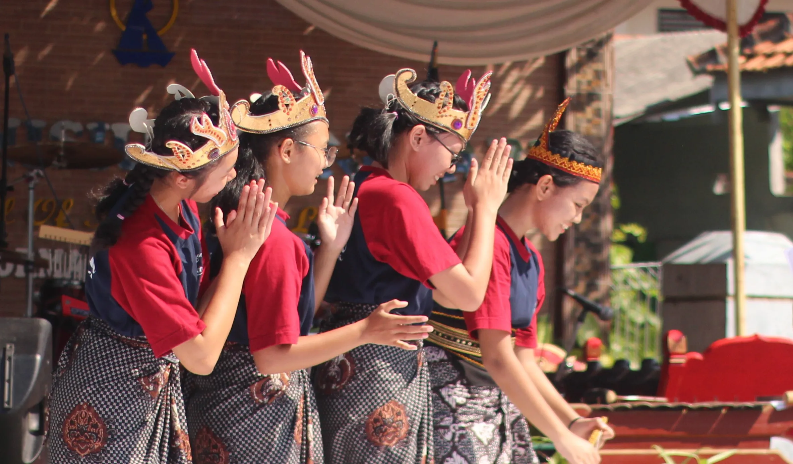
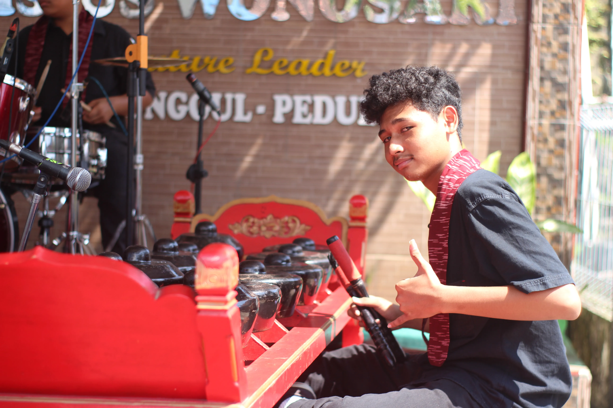
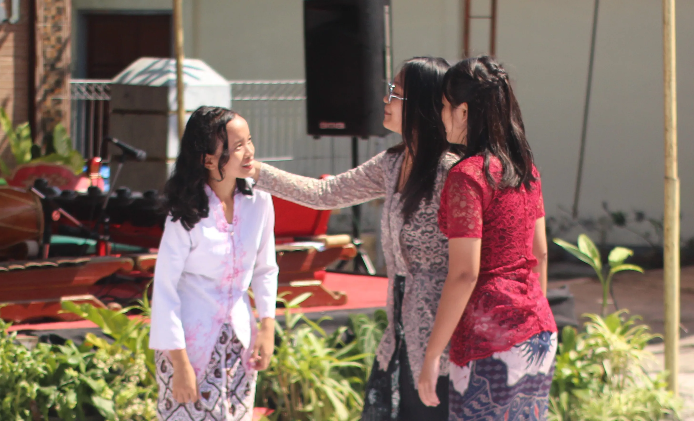
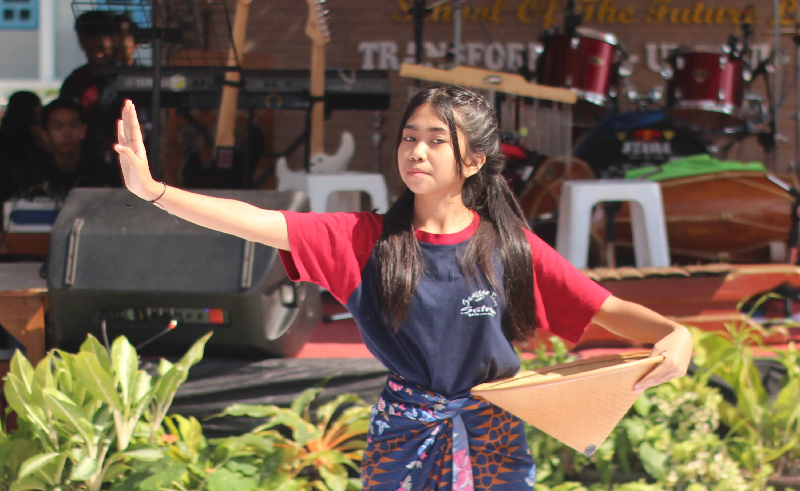
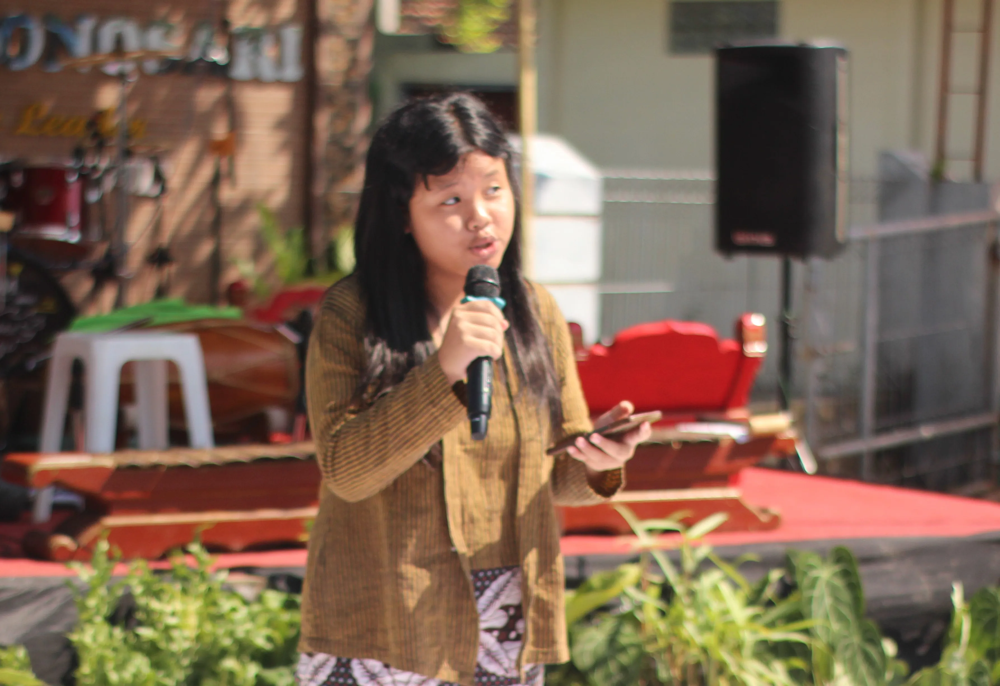
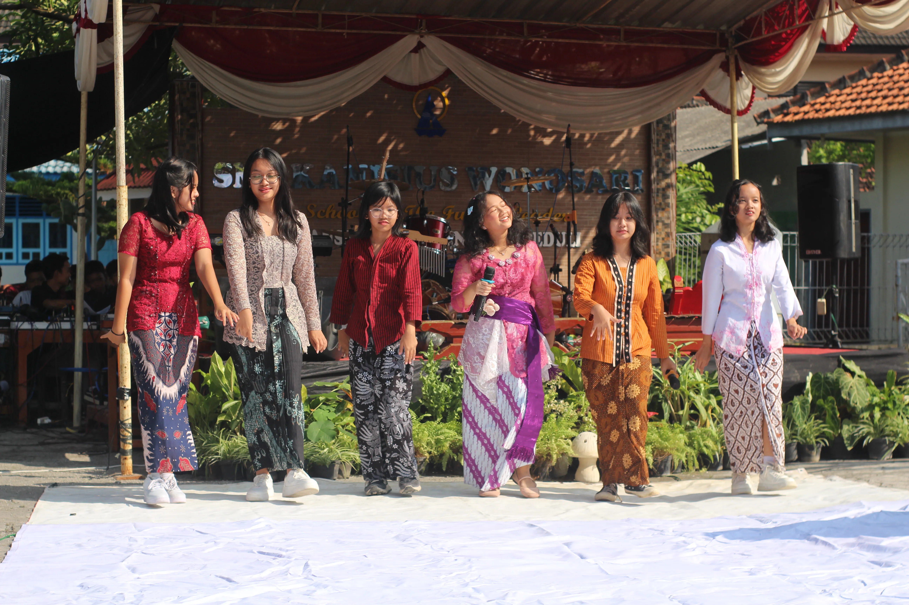

Saat mentari pagi menyapa halaman sekolah, irama gamelan, tawa, dan
suara lantang siswa mengisi udara.
Inilah hari di mana ekspresi, budaya, dan semangat tampil bersatu di
atas panggung. Dari karawitan hingga drama, dari nyanyian hingga
kebanggaan — semua tercurah dalam satu perayaan seni yang
menginspirasi.

Pukul 08.00, saat matahari mulai meninggi, suara gamelan terdengar
merdu dari panggung utama. Nada-nada khas dari alat musik
tradisional mengisi udara, menciptakan suasana damai dan penuh
khidmat.
Para siswa memainkan instrumen dengan penuh perhatian — bukan hanya
sekadar tampil, tapi menjadi bagian dari warisan budaya.

Di tengah taman yang kini berubah menjadi panggung, siswa-siswi
tampil membawa kisah rakyat penuh pesan moral.
Dengan ekspresi, gerakan, dan dialog yang penuh semangat, mereka
menyulap ruang menjadi dunia imajinasi — membuat penonton larut
dalam cerita.

Lantunan gamelan mengiringi langkah demi langkah siswa dalam
membawakan tarian tradisional.
Setiap gerakan mencerminkan kearifan lokal, keindahan budaya, dan
rasa hormat pada warisan bangsa.

Dalam keheningan , suara siswa membacakan puisi menembus ruang —
membicarakan harapan, alam, dan rasa.
Penonton dibawa larut dalam kata-kata yang jujur, indah, dan penuh
makna.

Di akhir acara, suasana menjadi hangat dan menyentuh saat seluruh
siswa bersama-sama menyanyikan lagu persatuan.
Suara berbeda menyatu — menyampaikan pesan sederhana bahwa seni
bukan hanya tampil, tetapi merayakan kebersamaan.

Acara ini bukan hanya tentang panggung dan penampilan.
Di baliknya ada keberanian siswa yang berbicara, ketekunan mereka
berlatih, dan semangat untuk menunjukkan jati diri melalui seni.
“Terima kasih untuk semua yang telah tampil, mendukung, dan menyaksikan.”
— SMP Kanisius Wonosari